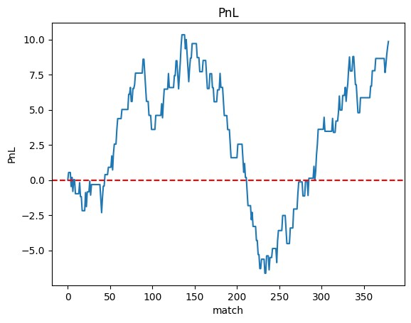

Reuben Leyland
I am a third year MEng student at Oxford University studying Engineering Science. My interests lie in information engineering and computing.
I've obtained a first class in exams thus far, and have been awarded multiple scholarships for academic achievement including the Anjool Maldé scholarship.
Outside of Oxford, I've spent time interning at Optiver , CFC and D Young and Co gaining skills and industry insights from each.
Projects
Alongside my degree, I pursue personal academic projects to develope my skills, have fun and one day accidentaly do something cool.
AlgoBet

A project aimed at using machine learning to find a profitable betting stratergy. The jupyter notebooks can be found on my github, with the notbook review_of_findings providing a summary.
ProgNets
An academic coursework module focusing on network devices run by the computer infrastructre group at Oxford. As part of this project, I created an alogrithmic trading bot using python and p4 which was capable of sending out buy or sell packages based on market conditions in a low latency enviroment. Code at cwm-ProgNets
OxfordStemTutor
I work as a part time tutor whilst at university to supliment my income. Along side this, I've created a brand to release free pre-university stem educational reasources. Although mostly altursitic in nature, this project also generates additional private tution leads and income. Website at OxfordStemTutor.com and accompany youtube vidoes on @oxfordstemtutor
Contact Me
Please reach out for a chat, reuben.leyland@sky.com. I'm looking for intersting roles upon my graduation (SS25), so I'd love to hear about any oppertunities or pieces of advice.